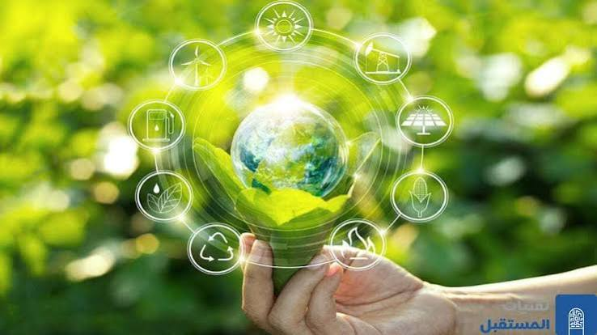

01
تقليل الآثار
استخدام التقنيات الحديثة للمساعدة في تقليل الانبعاثات واستهلاك الطاقة والاعتماد على مصادر الطاقة النظيفة.
التكنولوجيا من أجل مستقبل أفضل
كيف يمكن للتكنولوجيا أن تساعد الإنسان في مواجهة التغيرات المناخية وحماية البيئة؟
اكتشف المزيدترتبط التكنولوجيا والتغيرات المناخية بشكل وثيق، حيث يمكن للتكنولوجيا أن تكون أداة فعالة للتخفيف من آثار التغيرات المناخية والتكيف معها.
ومع التطور المستمر في علوم الكمبيوتر وتكنولوجيا المعلومات، أصبح من الممكن استخدام التقنيات الحديثة في مراقبة البيئة وتحليل البيانات وتطوير حلول تساعد على بناء مستقبل أكثر استدامة.

يمكن للتكنولوجيا أن تساهم في مواجهة التحديات التي يفرضها تغير المناخ، سواء من خلال التخفيف من آثاره أو التكيف معها.
استخدام التقنيات الحديثة للمساعدة في تقليل الانبعاثات واستهلاك الطاقة والاعتماد على مصادر الطاقة النظيفة.
استخدام التكنولوجيا في متابعة التغيرات المناخية والتنبؤ بها والاستعداد للظواهر الجوية المختلفة.
تساعد التقنيات الحديثة في مراقبة البيئة واكتشاف المشكلات البيئية والمساهمة في إيجاد حلول لها.
.jpg)
تساعد الألواح الشمسية على الاستفادة من الطاقة المتجددة وتقليل الاعتماد على مصادر الطاقة التقليدية.
.jpg)
يمكن استخدام الأقمار الصناعية لمتابعة التغيرات التي تحدث في البيئة والمناخ وجمع البيانات التي تساعد على فهمها.
.jpg)
تساعد التكنولوجيا في استخدام المياه والموارد الزراعية بصورة أكثر كفاءة، مما يساهم في حماية البيئة.
.jpg)
تساهم التكنولوجيا في توفير معلومات تساعد على الاستعداد لبعض الظواهر المناخية والكوارث الطبيعية.
تلعب التكنولوجيا دورًا حيويًا في مواجهة التحديات التي يفرضها تغير المناخ، سواء من خلال التخفيف من آثاره أو التكيف معها.
ومع ذلك يجب استخدام التكنولوجيا بمسؤولية، مع الأخذ في الاعتبار تأثيرها البيئي.
يهدف المشروع إلى تنمية الوعي بأهمية التكنولوجيا في مواجهة التغيرات المناخية، من خلال مفاهيم ومهارات الكمبيوتر وتكنولوجيا المعلومات.
ويمكن دمج هذه المهارات وتوظيفها في خدمة المواد الدراسية الأخرى، وكذلك المجتمع والبيئة المحيطة بالطلاب.
يمكن للطلاب توظيف البرمجيات والمهارات التي تعلموها في إنشاء مشروعات رقمية تخدم المواد الدراسية والمجتمع والبيئة المحيطة.
جمع وتنظيم البيانات المتعلقة بالبيئة والمناخ.
استخدام البيانات لفهم المشكلات البيئية.
إنشاء مواقع وتطبيقات تساعد على نشر المعرفة.
باستخدام مهارات البرمجة التي يتعلمها الطالب، يمكن تحويل المعرفة إلى مشروع رقمي يساهم في نشر الوعي بالمناخ وحماية البيئة.